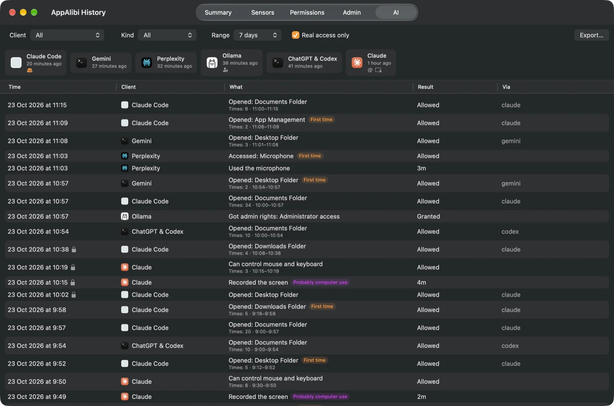

AppAlibi
Every app needs an alibi. So does every AI agent.
AI agents read your files, record your screen and move your mouse, in seconds and often while you're looking elsewhere. AppAlibi keeps a record of what they did, and what every other app on your Mac did too.
DownloadFree and open source. macOS 15 or later.
